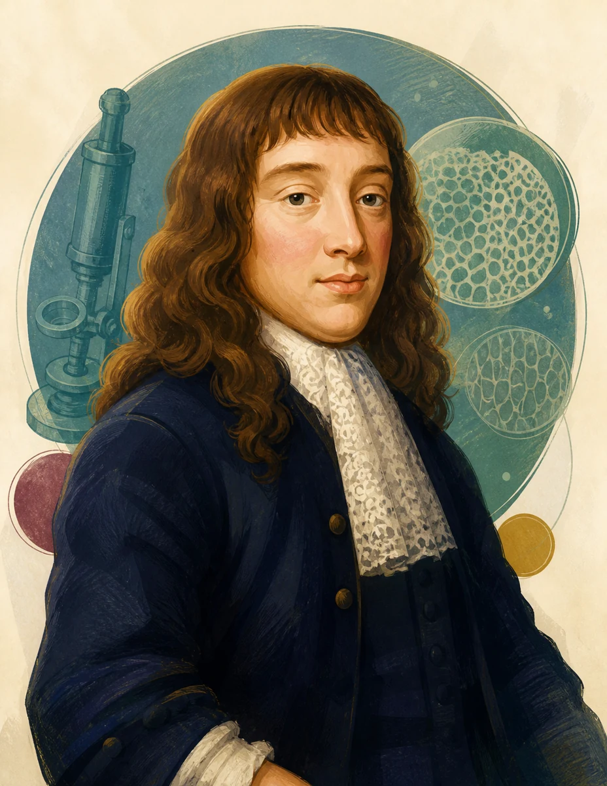
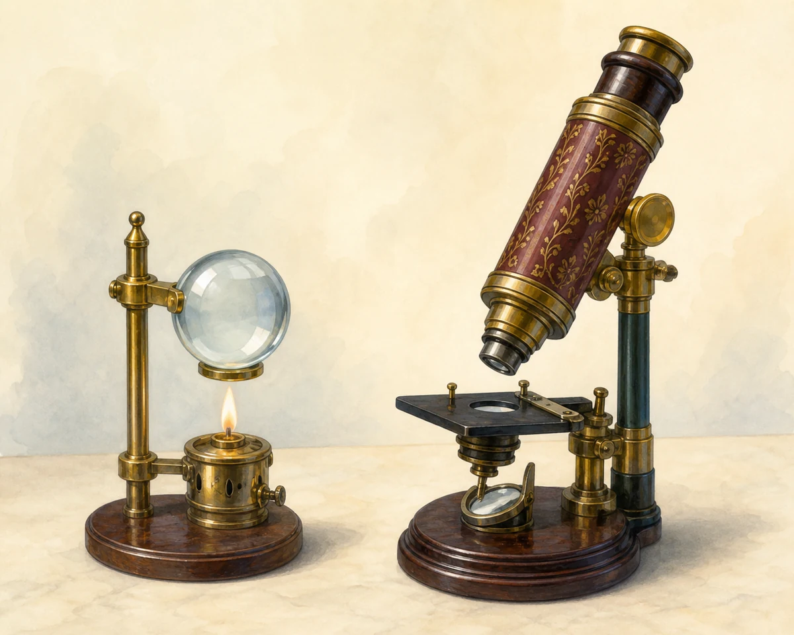
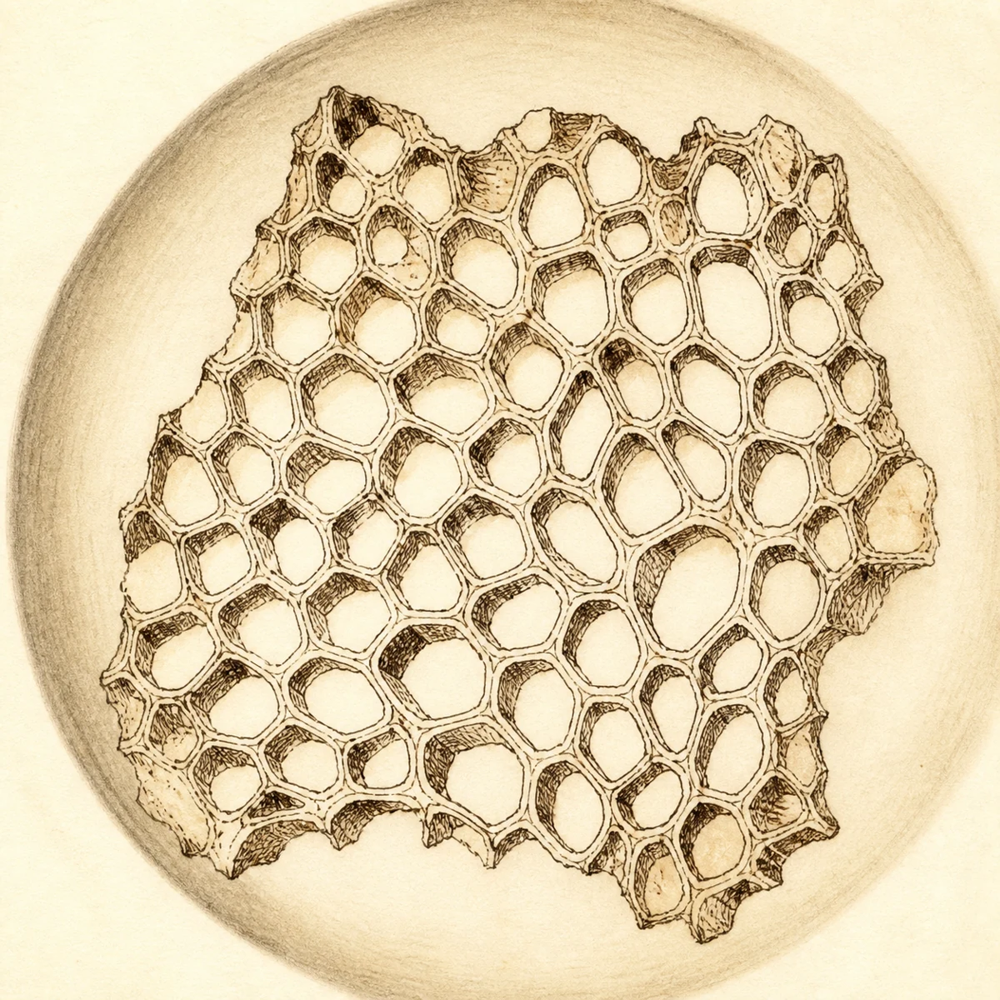
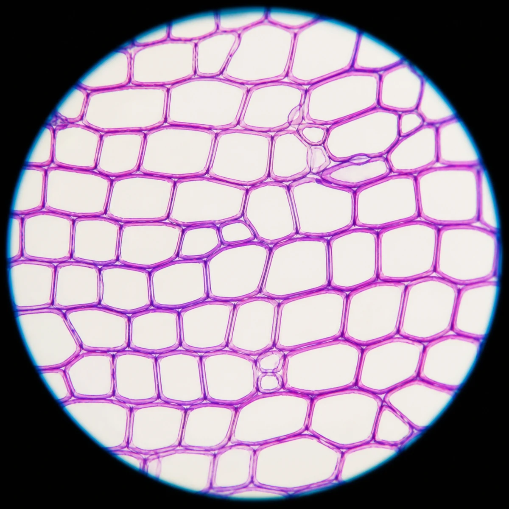

誰發現了細胞？
科學家想了解生物體由什麼組成，但必須等到觀察工具逐步改良，才能看見肉眼無法分辨的微觀世界。
從想像走向觀察證據
在顯微鏡出現以前，人們只能推測生物體的組成
古代曾有人以四元素或四液體解釋人體與疾病。這些說法缺乏直接的微觀觀察，直到顯微鏡出現後，科學家才有機會用可重複觀察的證據研究生物體。
詹森製作早期複式顯微鏡
早期單管狀複式顯微鏡的放大能力大約只有7～9 倍，但它開啟了利用透鏡觀察微小事物的可能。
虎克第一次描述細胞
虎克改良複式顯微鏡，使放大倍率提高到約50 倍。他觀察軟木栓薄片，看見許多蜂窩狀小格子，並在《顯微圖譜》中將它們稱為「細胞」。
重要限制：軟木栓中的細胞已經死亡，因此虎克看到的主要是死亡後留下的部分，不是完整的活細胞。




雷文霍克觀察更微小的生物
他改良鏡片研磨技術，把顯微鏡放大倍率提高到約270 倍，成為第一位發現與描述細菌的人。
細胞學說逐漸建立
許萊登提出植物體由細胞組成，許旺提出動物體由細胞組成。科學家據此整理出重要概念：細胞是生物體構造與功能的基本單位。
互動練習